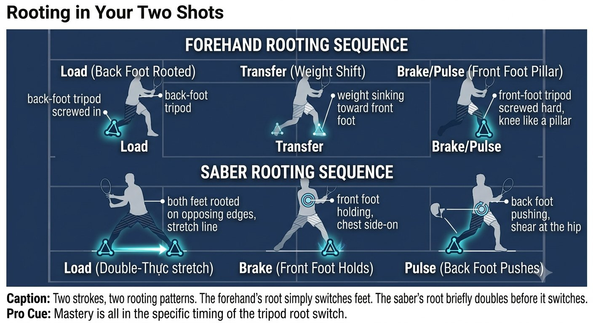

Chương 18: Bén Rễ¶
Kết Nối Với Mặt Đất (Root)¶
Không có rễ, sẽ không có tensegrity, không SSC, không phanh, không xung 1-inch. Toàn bộ công việc ở phần thân trên sẽ sụp đổ.
Rễ là khả năng gửi lực xuống mặt đất và lấy lại nó. Đó không phải là đẩy bằng cơ bắp — đó là sự canh chỉnh cấu trúc cộng với độ căng fascia, để lực phản ứng từ mặt đất truyền lên trên.
— Henry Phạm

Hình 18.1
Bén Rễ Thực Sự Là Gì¶
Quần vợt là một chu trình liên tục mất rễ rồi lấy lại rễ:
– Khi di chuyển: rễ giữ nhẹ và linh động, VOR bật.
– Khi đặt chân để đánh: rễ đi sâu, ngay tức thì, VOR lặng, sẵn sàng phanh.
– Sau cú đánh: rễ nhẹ trở lại để hồi phục.
Một rễ sâu là tripod, cộng với vòm chân, cộng với độ căng xoắn ốc.

Hình 18.2
Ba Điểm Của Rễ: Tripod¶
Bàn chân có ba điểm: gò ngón cái, gò ngón út, và tâm gót chân.
Cảm giác giống như bàn chân đang vặn vào mặt đất theo chiều kim đồng hồ với chân phải, ngược chiều kim đồng hồ với chân trái. Vặn — đừng giậm.
Kiểm tra bằng cách này: ai đó có thể đẩy nhẹ vào ngực bạn khi bạn đang ở tư thế đánh bóng mà không làm bạn di chuyển không? Nếu có, bạn đã bén rễ. Nếu bạn lùi lại, bạn chưa bén rễ.
Bén Rễ Trong Hai Cú Đánh Của Bạn¶
Forehand Push: Rễ Chân Sau Chuyển Vào Rễ Phanh Chân Trước¶
-
Nạp: tripod của chân sau vặn vào, vòm trong nâng lên, và bạn cảm thấy cơ khép đùi trong và cơ chéo bụng siết lại — đó là độ căng của đường xoắn ốc. Đây là rễ nạp lực cho SSC.
-
Chuyển: trọng lượng dịch chuyển, nhưng không bao giờ bằng cách bước nặng — mà bằng cách thả nhẹ rễ sau và chìm vào tripod của chân trước.
-
Phanh và xung: tripod của chân trước vặn cứng vào mặt đất và dừng lại. Đầu gối duỗi ra nhưng không bao giờ khóa cứng — giống như một trụ cột. Rễ trước cứng này chính là thứ tạo ra cú phanh và gửi xung lực lên trên tấm kính 45 độ. Không có rễ trước, cú phanh chỉ thuần túy là cơ bắp và bạn sẽ chỉ trượt đi.
Saber Backhand: Rễ Chân Trước Cộng Neo Chân Sau¶
Backhand cần một rễ sâu hơn nữa, vì bạn đang ở tư thế nghiêng bên và mất cân bằng hơn ngay từ đầu.
- Nạp: chân sau bén rễ trên cạnh ngoài, chân trước trên cạnh trong — bạn cảm thấy một độ căng giữa hai chân, như đang xé một tờ giấy ra bằng chính đôi chân. Điều này kéo căng fascia của đường lưng giữa hai chân.

Hình 18.3
-
Phanh: rễ của chân trước giữ vị trí nghiêng bên. Ngực không thể mở ra vì rễ trước đang giữ hông. Mở ngực quá sớm nghĩa là rễ đã gãy rồi.
-
Xung: chân sau đẩy vào mặt đất trong khi chân trước giữ — tạo ra lực cắt làm bật lưng xô.
Bén Rễ Động: Giữ Ổn Định Khi Đang Di Chuyển¶
Không có thời gian để thiết lập rễ một cách từ từ. Thứ bạn cần là một rễ tức thì.
– Các bước điều chỉnh nhỏ chính là việc quét tìm rễ — mỗi bước nhỏ tái thiết lập tripod thật nhanh.
– 2 bước cuối phải ngắn và thấp, hai chân rộng hơn hông — điều này hạ thấp trọng tâm và mở rộng nền, tạo một rễ tức thì.

Hình 18.4
– Điểm mấu chốt: một cái đầu bất động cộng Quiet Eye chính là thứ cho phép một rễ sâu. Di chuyển đầu và hệ tiền đình sẽ không cho phép bạn bén rễ sâu — nó giữ cho các cơ co-cứng để bảo vệ bạn khỏi ngã. Một cái đầu bất động báo cho hệ thần kinh biết rằng an toàn để bén rễ thật cứng.
Vậy nên thứ tự diễn ra là: đầu bất động, rồi VOR lặng yên, rồi bản thể cảm cảm nhận tripod, rồi fascia vặn vào, rồi rễ sâu, rồi cú phanh, rồi cú xung.
Huấn Luyện Rễ: Hai Phút Trước Khi Đánh¶
-
Drill vặn chân (30 giây mỗi chân): chân trần, ở tư thế tripod, vặn bàn chân vào mặt đất mà không dịch chuyển vị trí của nó. Cảm nhận vòm chân nâng lên và bắp chân, cơ khép đùi, cơ chéo bụng kích hoạt tự động — không siết cơ, chỉ vặn.
-
Kiểm tra đẩy: đối tác đẩy nhẹ vào vai bạn khi bạn đang ở tư thế forehand với tripod đã kích hoạt. Bạn nên cảm thấy lực đẩy truyền vào chân trước và xuống mặt đất, không bao giờ vào lưng dưới. Lưng dưới bị siết chặt nghĩa là rễ đã mất.
-
Hạ cánh trong lặng lẽ: split step và hạ cánh không có tiếng động nào. Lặng lẽ nghĩa là tripod đã hấp thụ nó một cách đàn hồi. Ồn ào nghĩa là gót chân đã đập xuống — không có rễ nào cả.

Hình 18.5
Vì Sao Tripod Quan Trọng¶
Hệ Thống Hoàn Chỉnh, Từ Mặt Đất Đi Lên¶
Rễ đến đầu tiên — nó chưa bao giờ là cuối cùng.
-
Root (Rễ): tripod vặn vào, sự kết nối với mặt đất hình thành.
-
V: đầu giữ bất động, VOR lặng đi.
-
Q: mắt đỗ trên vùng tiếp xúc.
-
F: độ căng của đường xoắn ốc hoặc đường lưng chạy từ rễ đến tay.
-
P: thính kình cảm nhận độ căng.
-
T: tensegrity giữ cấu trúc lại với nhau.
-
SSC: độ căng chuyển tiếp nhanh — dưới 0.2 giây.
-
8: số 8 giữ liên tục, kích cỡ của nó điều tiết công suất.
-
45°: mặt phẳng của số 8 chính là tấm kính 45 độ.
-
Phanh: chân trước hoặc core dừng cứng.
-
Xung: một cú phát kình 1-inch truyền qua bóng.
-
Kình: thính cảm nhận, hóa chuyển đổi, phát giải phóng.
Quy Tắc¶
Rễ đến đầu tiên, không phải cuối cùng. Toàn bộ công việc ở phần thân trên sẽ sụp đổ nếu thiếu nó.
Danh Sách Kiểm Tra Bén Rễ¶
VẶN CHÂN ĐỂ BÉN RỄ. ĐẦU BẤT ĐỘNG. MẮT ĐÃ ĐỖ. SỐ 8 NHỎ TRÊN KÍNH 45°. PHANH. XUNG.
– Tripod hoạt động: ngón cái, ngón út, gót chân — vòm chân đang nâng lên.
– Chân sau vặn vào khi nạp; chân trước vặn cứng khi phanh.
– Đầu giữ bất động từ lúc bóng nảy qua suốt giữ tiếp xúc.
– Mắt nhảy tới vùng tiếp xúc tại lúc bóng nảy và khóa ở đó.
– Cảm nhận độ căng của đường xoắn ốc hoặc đường lưng từ chân đến tay.
– Không dừng ở đỉnh vòng lặp — số 8 giữ liên tục.
– Chân trước hoặc hông phanh cứng — xung lực truyền lên tấm kính 45 độ.
– Một cú xung 1-inch xuyên qua bóng, không bao giờ là một follow-through dài.
– Cảm nhận nó như: thính (độ căng), rồi hóa (sự hứng), rồi phát (cú bật).
Chương Này Dẫn Đến Đâu¶
Chương này thiết lập rễ như biến số trong hệ thống Q-V-ROOT-8-45-Impulse-Kình CORE. Chương 19 bao quát hệ thống forehand push. Chương 20 bao quát backhand saber một tay. Chương 21 bao quát backhand hai tay dạng lai.
←Chương TrướcChương 17: Bước Chân Hư ThựcChương TiếpChương 19: Hệ Thống Forehand Push→